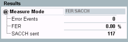
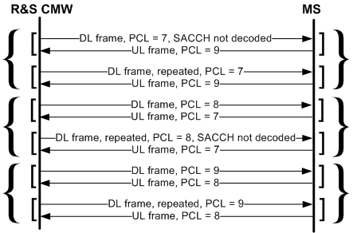
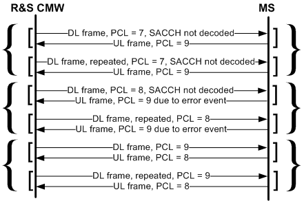

The R&S CMW provides FER SACCH tests for either non-repeated or repeated DL SACCH transmission.
The downlink slow associated control channel (SACCH) is used to transmit slow, but regularly changing control information, such as power control level (PCL) instructions, to the MS. On uplink, the SACCH carries, for example, the receiver reports of the MS. On a full rate TCH, SACCH bursts occur once every 26 TDMA frames. Each SACCH message ("SACCH Frame", also termed SACCH "Block") is interleaved over four SACCH bursts; therefore a SACCH frame can be sent once every 480 ms. In "FER SACCH" mode, the R&S CMW sends PCL instructions over the SACCH and compares them with the reported PCL of the MS.
To make the evaluation possible, varying PCL values are transmitted in consecutive SACCH frames. The R&S CMW changes between the PCL values 7, 8, and 9, following the rules for the repeated SACCH reference sensitivity test (see 3GPP TS 51.010, clause 14.2.26).

- Error events: Number of SACCH frames that the MS under test failed to decode properly (= number of reported PCL values which differ from the PCL transmitted on downlink).
- FER: Frame error rate, percentage of the error events relative to the total number of SACCH frames sent:
<FER> = <Error Events> / <SACCH Sent> - SACCH sent: Number of SACCH frames sent since the start of the (single shot) measurement. The first SACCH frame is not counted because an error decision involves the comparison of two consecutive frames or frame pairs (see examples below).
According to GSM specifications, each SACCH frame can be sent twice to improve the robustness of SACCH signaling. If the repeated SACCH functionality is enabled ("Connection > Circuit Switched > Repeated SACCH: On" in the "GSM Signaling Configuration" dialog), an error event occurs only if the MS fails to decode both frames. A repeated SACCH transmission without error events is shown below. Messages in angular brackets [...] are transmitted in the same reporting period. Curly brackets {...} enclose repeated SACCH frames.

In the following example, the MS fails to detect both the first SACCH frame and its repetition.

An "Error Event" occurs if the MS does not report the requested PC value after a sequence of two SACCH blocks. In the example above, an error occurs for the first frame pair. The R&S CMW counts two "SACCH Sent" frame pairs; the measured FER is 1/2 = 50 %.